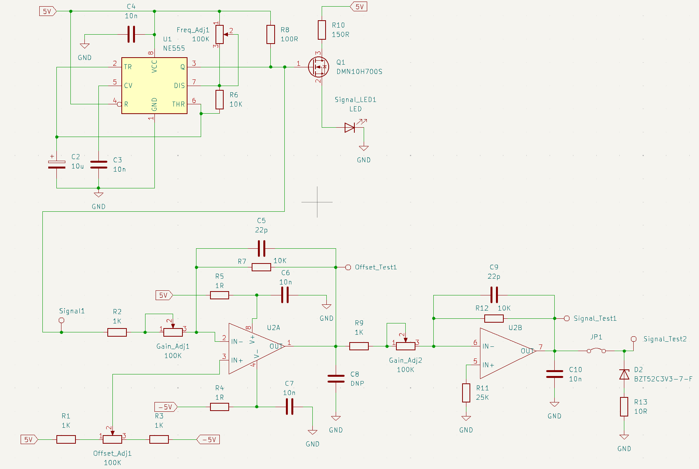
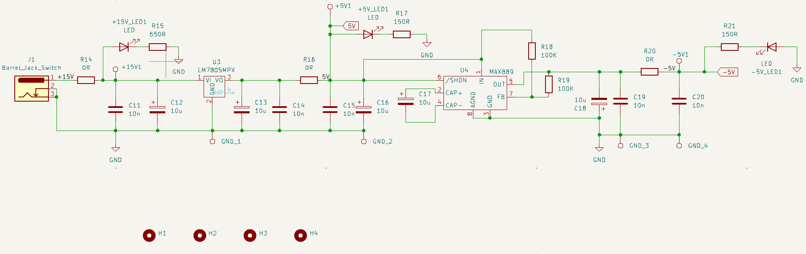
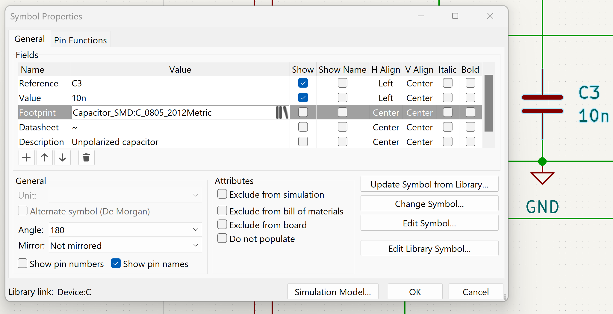
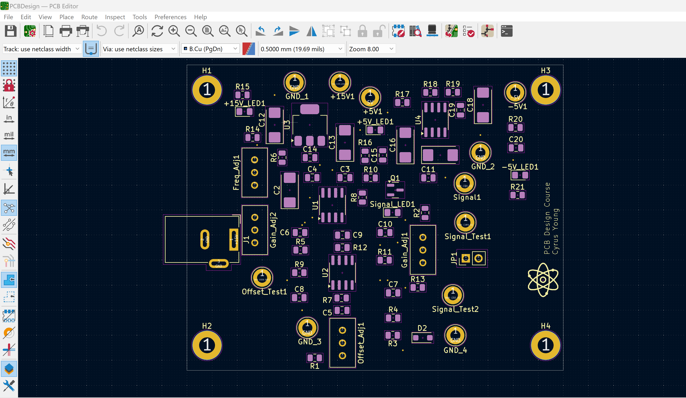
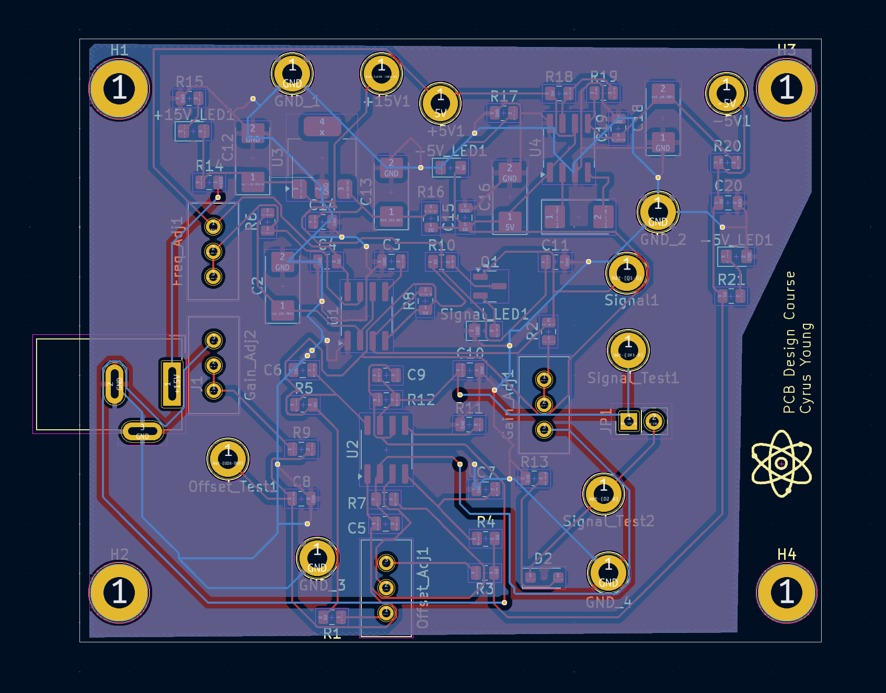
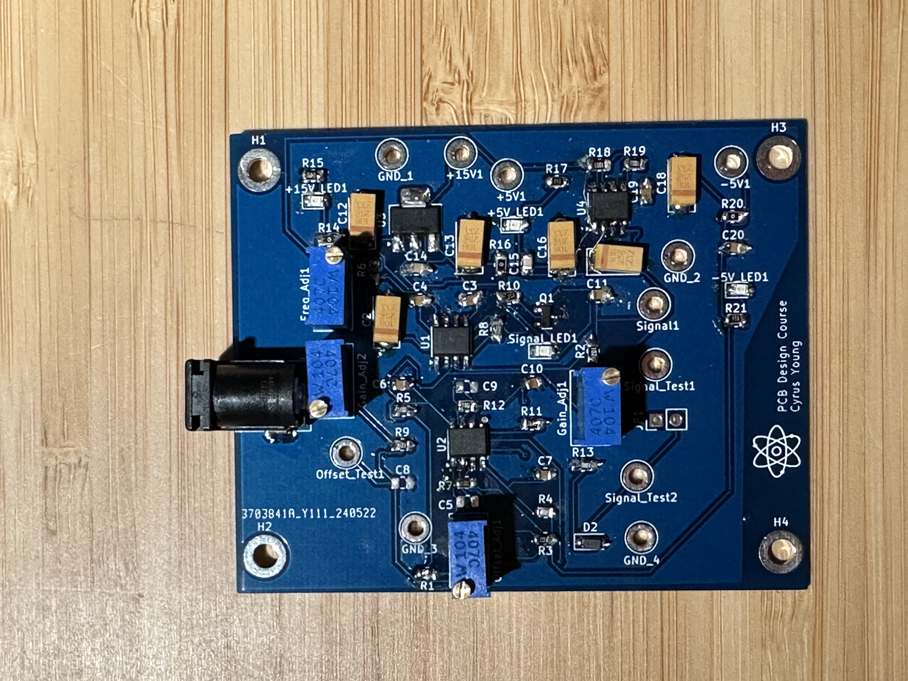

PCB Project
Using KiCad, I designed a signal-generator chip that utilizes a 15V DC signal passed through a voltage regulator to produce 5V DC. This 5V is then converted to -5V to power the rails of an op-amp, enabling control of the output signal amplitude. The 5V also powers a 100kHz Timer/Oscillator, producing a square wave signal that can be tuned in combination with potentiometers and the op-amp. The tuned signal can be read from a through-hole test port.
If we want to design such a PCB, we need to first create a schematic file of the form “schematicname.kicad_sch” where we design and properly label the schematics for the circuit. Sometimes it is necessary to manually create your own components if the component is not available in the library.
 We now have finished designing our schematic. But how do we go from a schematic to the actual physical layout of the circuit? The answer is using footprints. In KiCad, the physical layout of a component as it will be placed on the printed circuit board (PCB) is called its footprint. This means that we have to apply the appropriate footprint for each of the components. For example, the footprint for a 10 nF capacitor is shown below:
Using our completed schematic with the relevant footprints, we can now create a PCB file of the form “pcbname.kicad_sch” and import our schematic. An example of the skeleton setup of our circuit is shown below:
The next step is to actually connect the components. Remember in the beginning where I showed two separate schematics? This means that we have to make two separate layers of connections, both utilizing copper for the connections. Once we have properly connected all our components, we can generate the relevant gerber files. The gerber files will be used to eventually manufacture our circuit. A picture of both the final PCB design as well as the circuit itself are shown below:
 ENPH 353 Project
This project focuses on developing a robot in a simulated environment for a project course called ENPH 353.